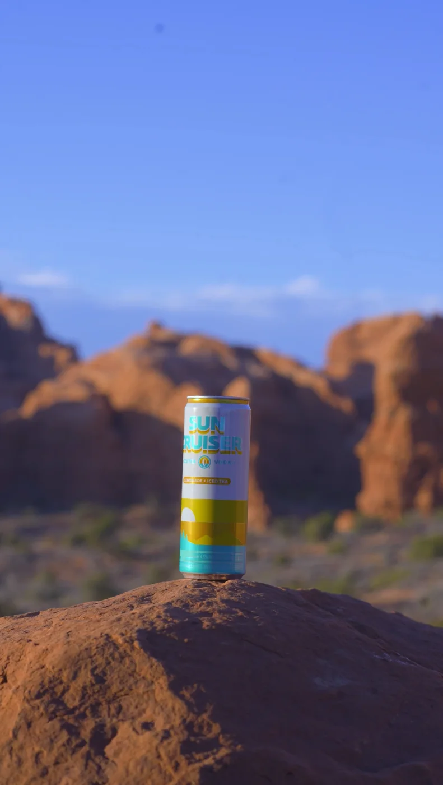
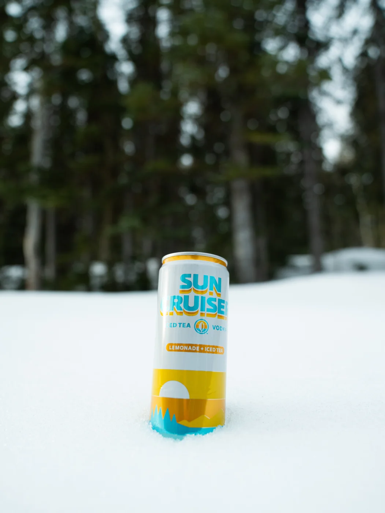
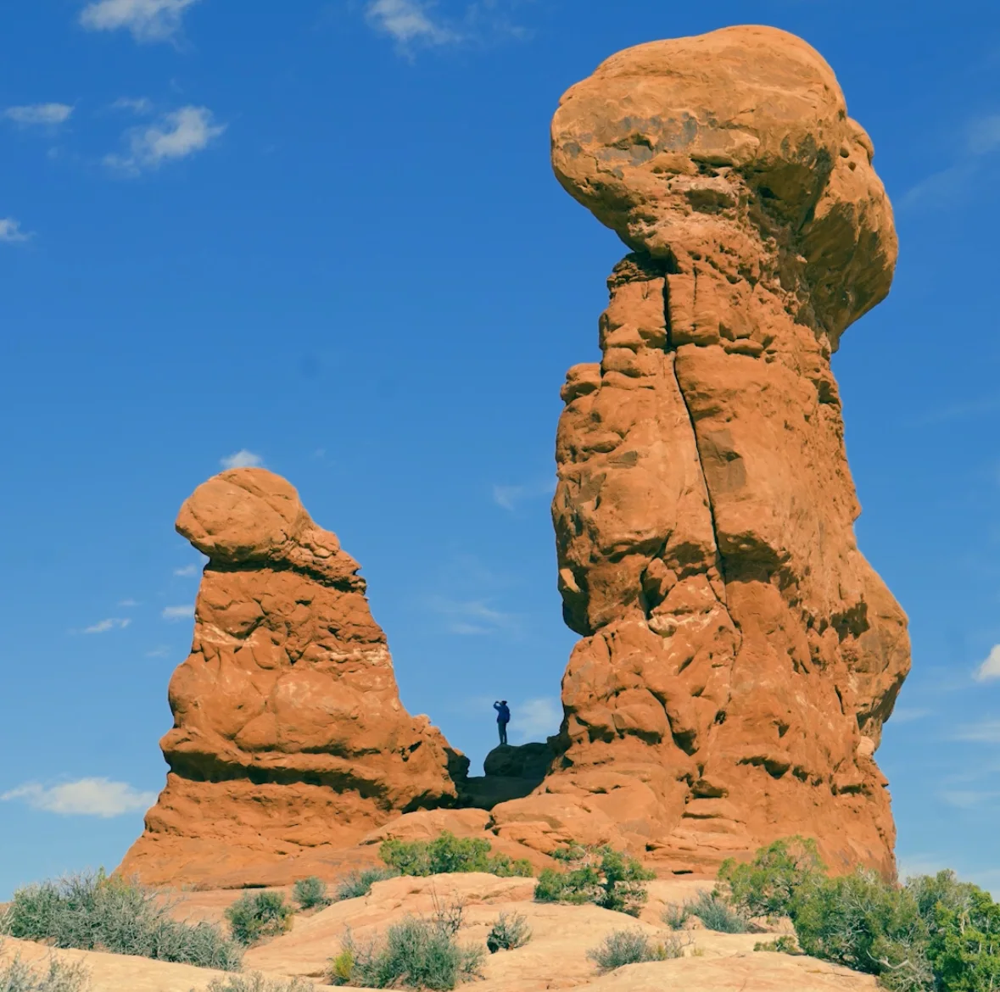
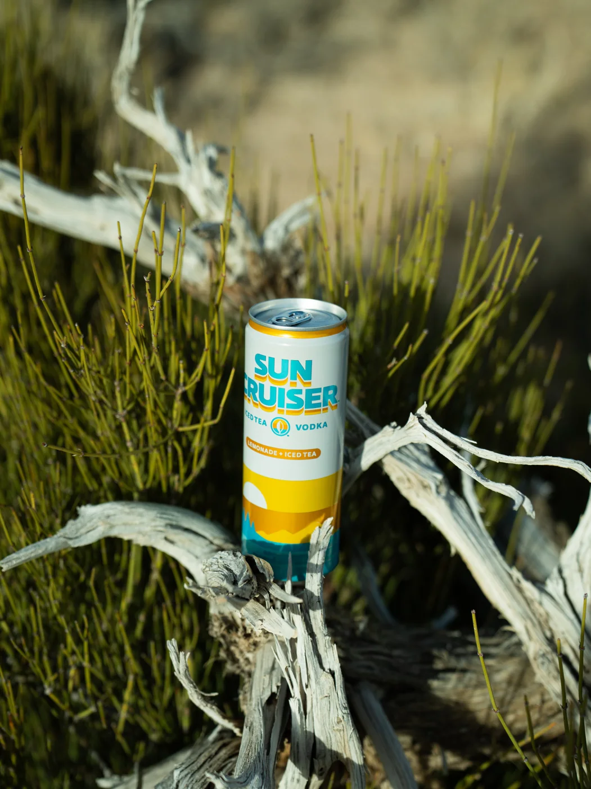
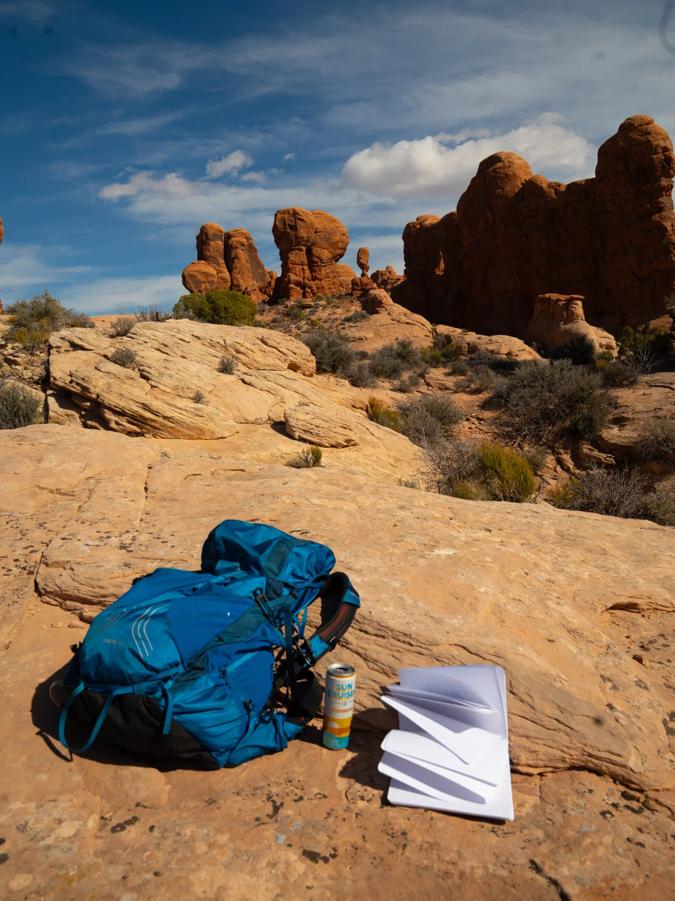

Selected founder work · Brand collaboration
Sun Cruiser





A creative collaboration between ALIC co-founder Andrew Iwanicki and Sun Cruiser, this project explores how thoughtful product photography and lifestyle filmmaking can make a beverage feel connected to a place, a season, and a moment. The original creative direction centered on Sun Cruiser's easygoing personality and its invitation to let the good times cruise. Rather than relying exclusively on conventional product shots, the work places the cans within real outdoor environments, giving the imagery a sense of spontaneity while keeping the product recognizable and central to the story.
The collection moves through contrasting settings, from warm-toned desert landscapes and rugged rock formations to snow-covered surroundings. Those shifts in location offer different moods and uses for the same product: adventure, relaxation, and the small moments that define time spent outside. Across the photography and videos, the aim was to balance natural surroundings with clear product visibility, using composition, light, and movement to create content that feels considered without losing its sense of authenticity.